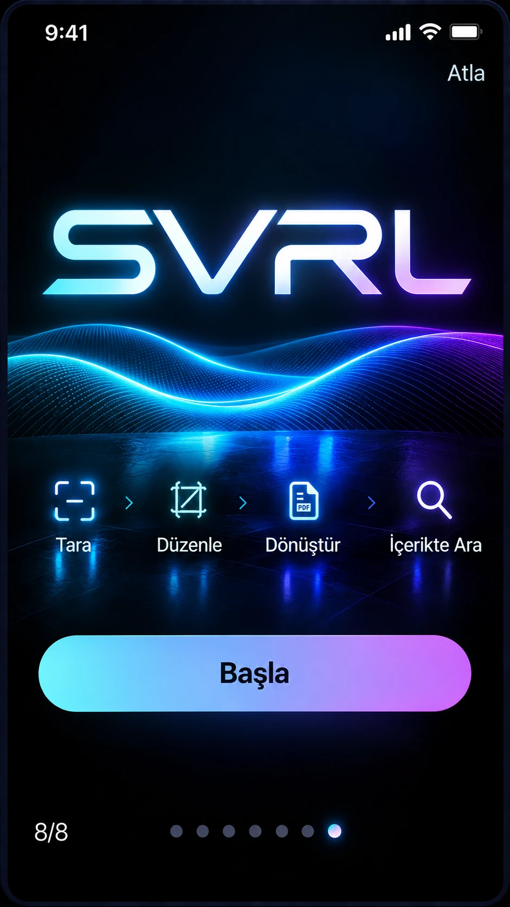
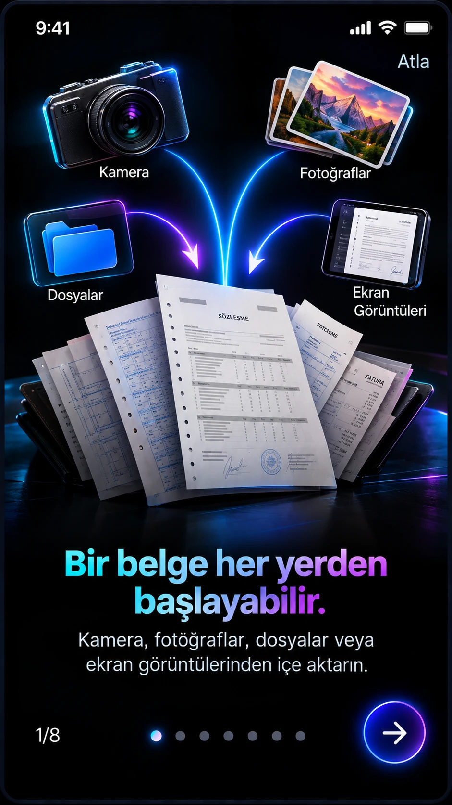

Start where your document is.
Scan with the camera or bring in material from Photos, Files and screenshots.
Scan a page. Refine its edges. Turn the whole stack into a PDF you can search, save and share.
One complete free use planned. No automatic paid sign-up.

For letters, receipts, notes and everyday paperwork. Bring your pages together, review the result and keep the document ready for its next step.
Scan with the camera or bring in material from Photos, Files and screenshots.
Review the crop, adjust corners and put pages in the right order before finishing.
Create a searchable PDF, find text in its contents, then save, share or send it.
Start the introduction and continue when you are ready. Each step stays on screen until you move on.
From capture to a searchable PDF, see how the steps fit together.
Illustrated previews. The introduction is available to revisit here.

Watch the illustrated SVRL workflow from importing a document to searching and sharing the finished PDF.
Silent presentation of the design previews. Play, pause or replay whenever you like.
One complete free use is planned, followed by Pro for continued use. No purchase is available on this website.
No automatic subscription from the free use.
Continue using the scanning and PDF workflow after your free use.
Planned US prices. Final availability and your local price will appear in the app's Apple purchase screen. Paid subscriptions renew automatically until cancelled.
SVRL PDF Scanner brings document capture, crop correction, page organisation, OCR and PDF creation into one workflow. Save the result or share it through your iPhone.
Review the detected boundary and adjust the corners manually before finishing. This is especially useful for folded corners, stapled pages and uneven edges.
Yes. Arrange scanned pages in the order you need, add pages or remove unwanted pages before creating your PDF.
OCR recognises text in scanned pages so that you can search their contents. Recognition quality depends on the image, language and readability of the original. Check important names and numbers.
The planned offer includes one complete use at no charge. Continued use requires Pro. A free use does not automatically start a paid subscription.
Purchases will be made inside the iOS app through Apple. The app is not on sale from this website. Manage or cancel an active subscription in your Apple account subscription settings; deleting an app does not cancel it. Restore an existing purchase inside the app.
SVRL is in development. An App Store link will be added after release. This page presents the intended workflow and design previews.
Share a review, ask a question or suggest an improvement for a future version of SVRL.
There are no published user reviews here yet. We will show real feedback as it arrives.
Read community feedbackCommunity feedback is public on GitHub. A GitHub account is needed to post. For private support, email smanvar4255@gmail.com.